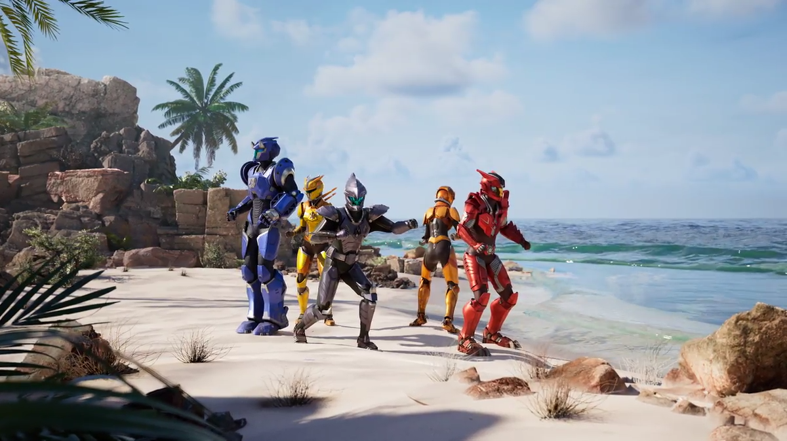
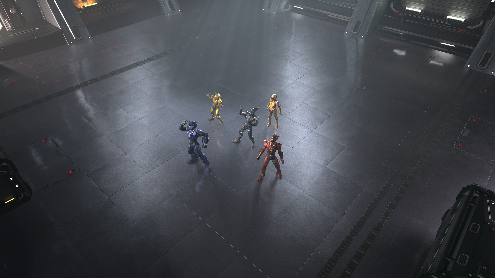
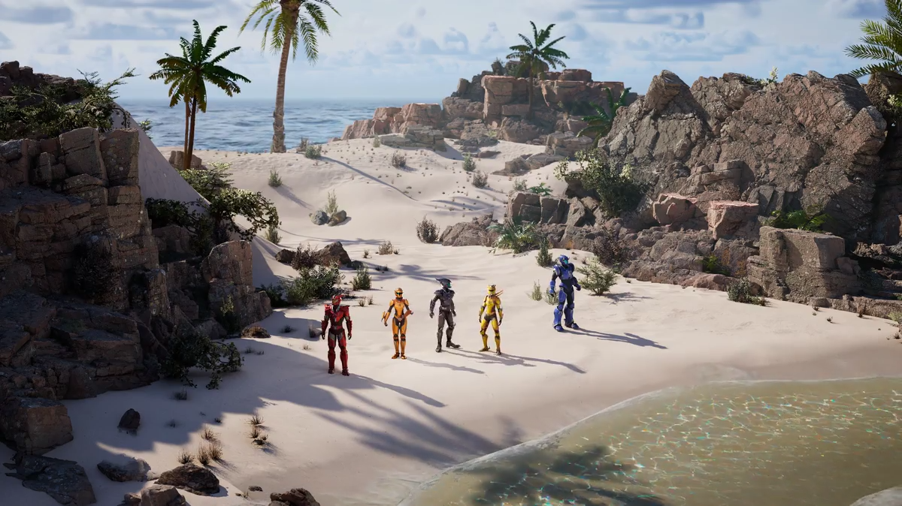
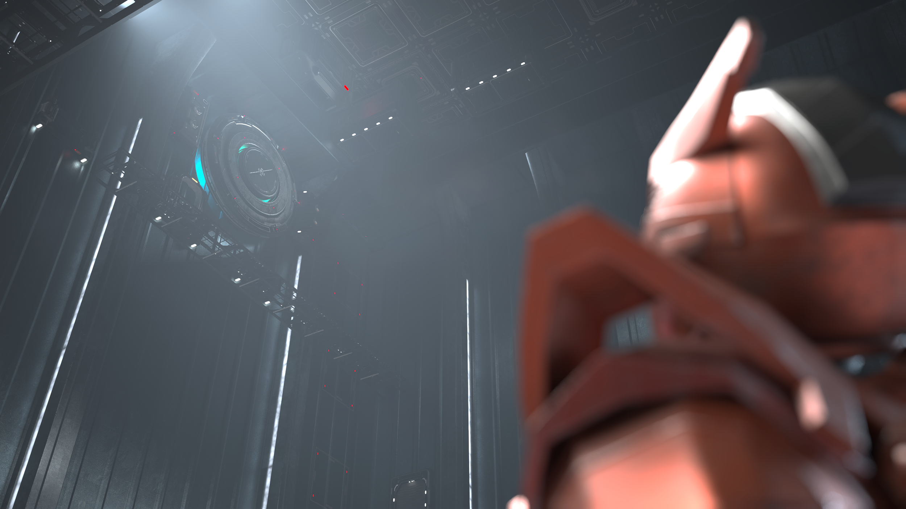

From my time at Pixel Zoo, this project was by far the most enjoyable for me. It pushed both my technical and creative skills to new levels. The challenge of creating high-quality assets for live action VFX - from detailed materials to optimized environments - was incredibly rewarding. Collaborating with a talented team to bring imaginative concepts to life inspired me every day.
Most of my time was spent fixing and creating shaders, but I had the privilege of working on some wonderful sets. (This project is still in production - These renders are my own and are not finals).
The Beach Set
Using a landscape material I had made, along with Virtual Texture streaming and custom Megascans Master Materials, I built this set in about a week. A large part of this set was the water; I used Fluid Flux, a wonderful Unreal Engine fluid simulation tool, ensuring nothing in the scene would have problems during rendering.
The Holodeck
Scripted to be a room in which a training simulation takes place. There were two main concepts I wanted to push: that this room was very large, and very high-tech. Coming from Video Games, I built this set modularly, making it lighter on render times. Striking a balance between storytelling and realism within Unreal Engine's Substrate Materials was a true priority.
The Jungle
A technical challenge. The first task was getting all foliage onto the same optimized Master Material using Substrate and Lumin. We originally created a landscape, but later swapped it out for a mesh with vertex painting combined with Defer Decals to give lighting full control over diffuse transparency areas.
PROJECT RENDERS





